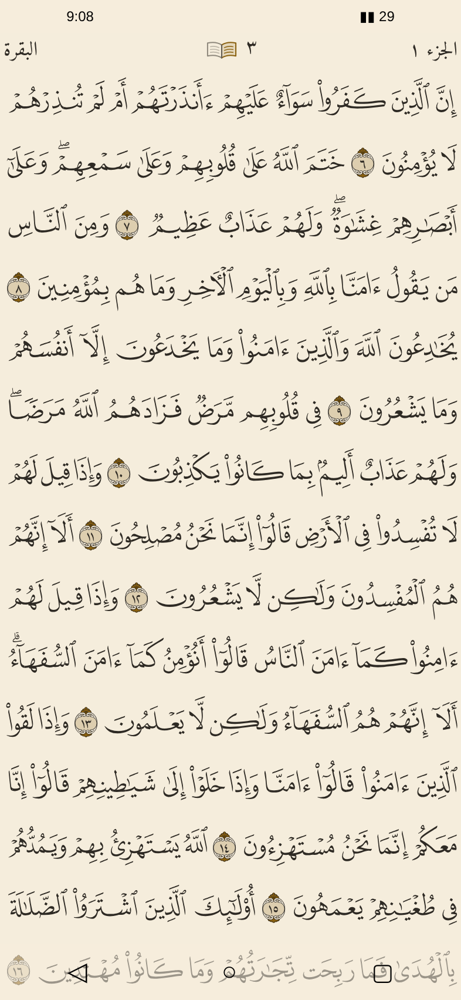
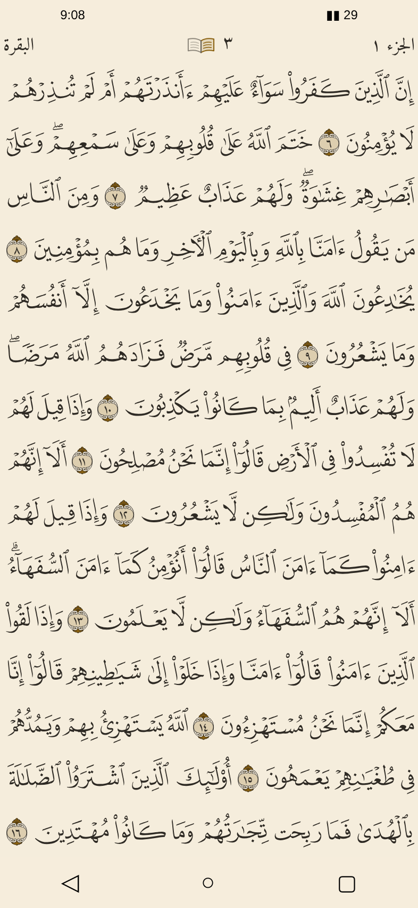

معاينة أيقونة التطبيق
كل خيار معروض بالشكلين اللذين تقصّ بهما جوالات أندرويد الأيقونة: الدائرة، والمربع المستدير (سامسونج). وتحت ذلك شاشة رئيسية مصغّرة بالحجم الحقيقي تقريبًا. اكتب لي رمز الخيار الذي يعجبك (مثل «أ٢» أو «ب٣»)، أو اجمع بين خيارين.
الحالية
أ — الشعار نفسه بخمسة تنسيقات
الكتاب المفتوح نفسه من شعار «حفظ القرآن بطريقة السلف»، بحجم أو موضع أو ألوان مختلفة.
ب — خمسة شعارات جديدة
أفكار جديدة بلونَي التطبيق (الكحلي والبرتقالي).
على الشاشة الرئيسية
صفحة المصحف في التطبيق (التعديل الأول)
مقاس جوال شائع، وأسفله شريط أزرار أندرويد الثلاثة.
قبل
آخر سطر تحت شريط الأزرار
آخر سطر تحت شريط الأزرار

بعد
آخر سطر فوق شريط الأزرار، والأسطر أقرب قليلًا، والخط بحجمه
آخر سطر فوق شريط الأزرار، والأسطر أقرب قليلًا، والخط بحجمه

الصورتان محاكاة في المتصفح. والحقيقة في التطبيق نفسه: ثبّت آخر نسخة من الرابط الثابت وانظر صفحة البقرة.